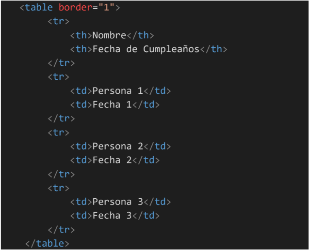
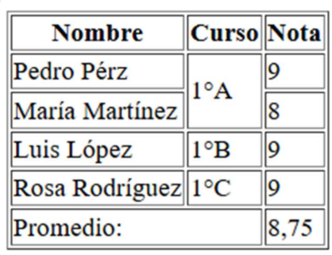

Tablas en HTML
Una tabla es un conjunto estructurado de datos distribuidos en filas y columnas (datos tabulados). Una tabla permite buscar con rapidez y facilidad valores entre diferentes tipos de datos que indiquen algún tipo de conexión. Por ejemplo, una persona y su edad, o un día de la semana o el horario de una piscina municipal.
¿Cuándo no debes usar tablas HTML?
Las tablas HTML están pensadas para utilizarse con datos tabulados. Por desgracia, mucha gente utiliza las tablas HTML para hacer compaginaciones de páginas web. Por ejemplo, una fila para contener la cabecera, una fila para contener las columnas de contenido, una fila para contener el pie de página, etc. Se solía hacer este uso de las tablas porque la compatibilidad CSS entre navegadores solía ser terrible.
Crear una tabla
Para crear una tabla vamos a necesitar conocer cuatro elementos básicos: table, th, tr y td.
- table: Agrupa al resto de elementos de la tabla.
- th (table head): Define una celda de encabezado en una tabla. Suelen contener los títulos de las columnas y se muestran en negrita y centradas por defecto.
- tr (table row): Representa a una fila de la tabla. Por lo tanto, tendremos tantos elementos tr como filas tenga la tabla.
- td (table data): Representa de una forma unitaria a una celda. Por lo tanto, los elementos tr tendrán tantos elementos td en su interior como celdas contenga la fila.
De acuerdo con lo anterior, ¿cuántas filas, columnas y celdas tendría la siguiente tabla?

Algunos atributos de las tablas:
- Border: agrega bordes visuales a la tabla y a sus celdas. Es importante destacar que este atributo ya no es parte de la especificación HTML5 y su uso no es recomendado, se sugiere usar CSS para definir los bordes de las tablas.
- Colspan: se utiliza para combinar múltiples celdas en una sola celda a lo ancho de la tabla. Al especificar el valor de colspan en una celda determinada, dicha celda se expandirá para abarcar el número especificado de columnas adyacentes. Esto es útil cuando se desea combinar celdas que contienen información relacionada o cuando se quiere crear encabezados que abarquen varias columnas.
- Rowspan: permite combinar celdas verticalmente a lo largo de varias filas en una tabla. Al asignar un valor de rowspan a una celda específica, esta se extenderá sobre las filas especificadas, permitiendo la creación de diseños más complejos donde una celda puede cubrir varias filas.
Ejercicio: Realiza la siguiente tabla, incorporando los atributos colspan y rowspan
